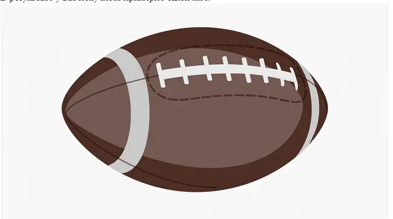

Правая белая полоса
Правую полосу можно сделать так же, как и левую, либо нарисовать её самостоятельно с помощью инструмента :
Белый шов
- Белый шов повторяет форму основного. Возьмите поперечный шов, с зажатой клавишей Ctrl (⌘) выделите все
точки снизу и удалите их. У вас должна получиться короткая линия длиной с поперечный шов.
- Поместите линию на референс и, если нужно, сделайте её длиннее или короче в режиме векторного редактора.
- Поместите вектор на нижний край шва и с помощью пера: обведите и остальной контур шва.
- С помощью пера повторите контуры всех стежков.
Результат
В результате у вас получится примерно такой мяч
